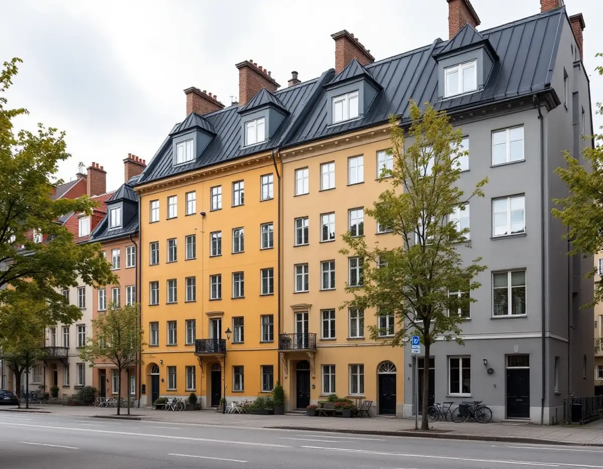
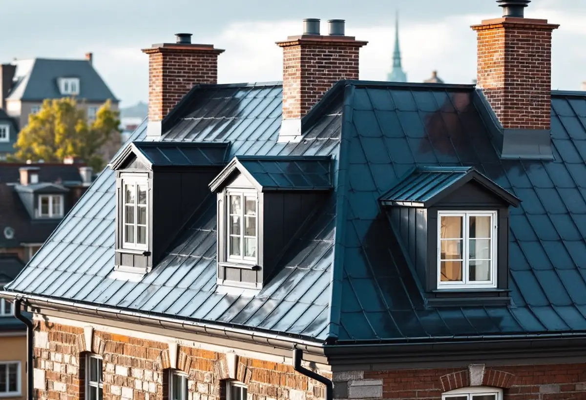

Takbyte på Kungsholmen
Byte av tegel-, betong- och plåttak.
Takbyte på Kungsholmen →På Kungsholmen är de flesta tak föreningarnas tak. Vi är takläggare på Kungsholmen för bostadsrättsföreningar och fastighetsägare – omläggning av plåttak, takkupor, takavvattning och underlag inför solceller, från Fredhäll och Kristineberg till Marieberg.

Stadens områdesfakta räknar 44 554 bostäder i Kungsholmens stadsdelsområde för 2024. Av dem var 30 598 bostadsrätter, och bara 337 låg i småhus. Den som hör av sig om ett tak här gör det därför nästan alltid för en förening eller en hyresvärd, och beslutet fattas av en styrelse efter ett underlag – inte vid köksbordet en kväll.
Stadens beskrivning av riksintressena räknar Kungsholmen till den klassiska stenstaden, den täta kvartersstaden från 1870–1930 som också finns på Östermalm, Södermalm och Norrmalm. Taken där beskrivs som sluttande och oftast plåttäckta, med en lutning på upp till 45 grader från fasaden. Taklandskapet räknas som en del av det som ska bevaras.
Men allt på Kungsholmen är inte stenstad. Samma text påpekar att hus som kom till under rivnings- och saneringsvågen 1950–1980 kan förändras med friare förutsättningar. Innan vi föreslår material eller kulör tar vi därför reda på när huset byggdes, hur det är klassat och vad detaljplanen säger.
Ett plåttak på ett stenhus läggs om i etapper som styrelsen ofta vill kunna planera över flera år: först de takfall som läcker, sedan resten. Vi delar därför upp kostnadsförslaget i takfall och detaljer – takfot, ränndalar, skorstensbeslag, huvar och snörasskydd – så att föreningen ser vad som är akut och vad som kan vänta till nästa budgetår.
Oavsett om du behöver ett komplett takbyte eller en riktad renovering ger vi en tydlig bedömning och offert. Vi arbetar även i grannområden – se alla områden vi arbetar i.

Många föreningar på Kungsholmen frågar om solceller. Stockholms stad skriver att bygglov ofta krävs, och att det beror på vilken typ av byggnad det är och vilket takfall panelerna ska sitta på. Staden pekar också på Försvarsmaktens riksintresse: inom eller i anslutning till det krävs bygglov för solceller i område med detaljplan, och därför i stora delar av Stockholm, bland annat på grund av väderradarn i Håtuna.
Staden varnar för att dess vägledning om solenergianläggningar inte är uppdaterad efter lagändringarna 1 december 2025. Anmälan behövs bara när byggnadens bärande delar eller brandskydd påverkas väsentligt. Vår del är taket under panelerna: ska ett plåttak bära solceller bör det vara omlagt eller i så gott skick att det inte behöver rivas strax efter montaget. Stadens solkarta ger en första bild av hur mycket sol taket får.
Stadens sida om flerbostadshus räknar mindre takkupor till de lovpliktiga fasadändringarna, medan en större takkupa räknas som en tillbyggnad. I båda fallen behövs ritningar. Fasadritningen görs i skala 1:100, och för en ny takkupa kan staden vilja se en detaljritning i 1:10, 1:20 eller 1:50 som visar hur plåt, fönster och anslutningar mot det befintliga taket utförs.
Vi hjälper föreningen och dess arkitekt med hur kupan ska täckas och anslutas, så att detaljerna på ritningen går att bygga och håller tätt i ränndalarna och vid takfoten.
Äldre ritningar finns i stadens arkiv och kan hämtas i Bygg- och plantjänsten. Staden påpekar själv att ritningar kan vara ofullständiga och att det inte är säkert att de som byggde följde dem. Vi använder därför ritningarna som en karta men kontrollerar takstolar, underlag och genomföringar på plats.
Det vi ser på vinden – fuktfläckar på råsponten, rost i infästningar, gamla lagningar – sammanfattar vi med foton i det underlag som styrelsen får.
För ett flerbostadshus skriver Stockholms stad att bygglov behövs när en ändring görs på en fasad eller ett tak som vetter mot allmän plats, till exempel en gata eller en park. Ändringar som inte vetter mot allmän plats kan göras utan lov om vissa förutsättningar är uppfyllda. Staden räknar byte av kulör eller material på taket som en fasadändring, liksom nya ventilationshuvar, skorstenar och solenergianläggningar.
Samtidigt ska en lovfri ändring stämma med detaljplanen eller vara en liten avvikelse som inte motverkar planens syfte, och i särskilt kulturhistoriskt värdefulla miljöer krävs lov ändå. Ska föreningen byta från svart till grå plåt mot gatan är det alltså en lovfråga, medan samma byte mot gården kan vara lovfritt – om inget annat gäller för fastigheten. Vi tar reda på det innan kostnadsförslaget skrivs.
Byte av tegel-, betong- och plåttak.
Takbyte på Kungsholmen →Riktade åtgärder som förlänger takets liv.
Takrenovering på Kungsholmen →Bedömning av skick inför beslut.
Takbesiktning på Kungsholmen →Nytt ytskydd på plåttak.
Takmålning på Kungsholmen →Skonsam tvätt och mossbehandling.
Taktvätt på Kungsholmen →Nytt plåttak och plåtarbeten.
Plåttak på Kungsholmen →Vi utgår från Bromma och tar takuppdrag på hela Kungsholmen. Styrelsen får en skriftlig bedömning med foton från taket och vinden och ett kostnadsförslag som går att lägga fram på ett styrelsemöte.
Läs mer om tak på villa eller jämför takbyte och takrenovering innan du bestämmer dig.
Vi arbetar även i Vasastan.
Takläggare i Vasastan →Vi arbetar även på Södermalm.
Takläggare på Södermalm →Vi arbetar även i Bromma.
Takläggare i Bromma →Vi arbetar även i Solna.
Takläggare i Solna →